<nav class="top-bar topbar-responsive warmun"> <!--#3D1549-->
  <div class="top-bar-title">
    <span data-responsive-toggle="topbar-responsive" data-hide-for="medium">
      <button class="menu-icon" type="button" data-toggle></button>
    </span>
    <a class="topbar-responsive-logo" href="../warmun/"></a>
  </div>
  <div id="topbar-responsive" class="topbar-responsive-links">
    <div class="top-bar-right">
      <ul class="vertical medium-horizontal dropdown menu" data-responsive-menu="accordion medium-dropdown" data-alignment="right">
        <li><a>Logistics</a></li>
        <li><a>Socials</a></li>
        <li><a href="../secretariat/">Secretariat</a></li>
        <li><a>About</a></li>
        <li><a href="../">Warwick UN Society</a></li>
        <li>
          <button type="button" class="button hollow topbar-responsive-button" onclick=" window.open('#','_blank')">Apply now!</button>
        </li>
      </ul>
    </div>
  </div>
</nav>
